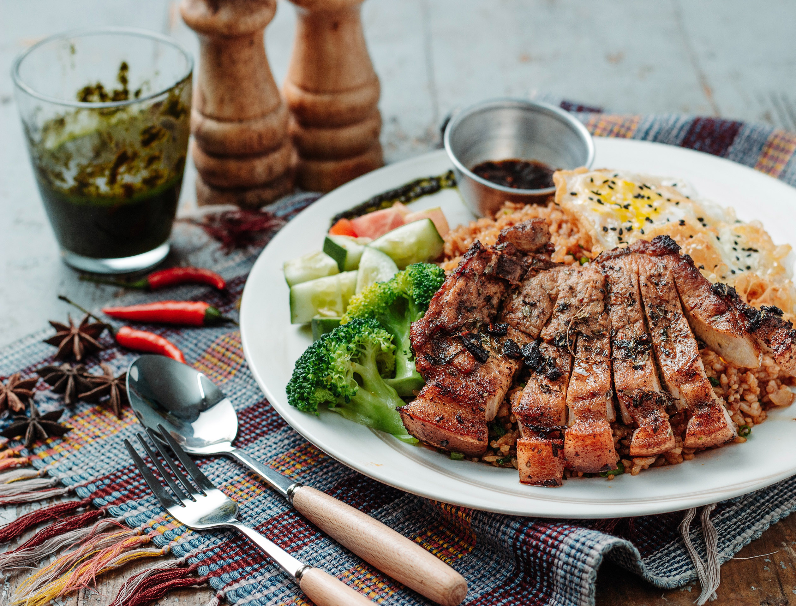

Costillar Asado
Para esa ocasión especial...
Características: Carne
Tiempo de cocinado: 45min
Asado
Ingredientes
- 1 unidad de Costillar de vaca (8kg)
- 100 gramos de Sal gruesa
- Aceite de oliva
- Mostaza
- 1 rama de romero
Preparación
- Saca la carne de la nevera y deja que tome temperatura ambiente, déjala en reposo al menos dos horas antes de la preparación. Ten cuidado de no dejarla dentro de una bolsa porque puede dañarse fácilmente, mejor cúbrela con un trapo limpio y húmedo.
- Mientras, ve prendiendo un fuego con leña. Usa troncos que no sean muy gruesos, con un diámetro de 15 centímetros será suficiente. También aprovecha este tiempo para preparar una salmuera y moja de ambos lados El agua ayuda a que se pegue y se forme una costra. Parece mucha sal pero no, durante la cocción se endurece y la carne toma la sal justa. La costra, al momento de servir las costillas, se cae fácilmente.
El lado de la carne y no del hueso va sobre la cruz, bien estirada, en los ganchos. Si es necesario de sujeta con alambre atravesando la carne y rodeando el hueso. Es importante que quede bien agarrado arriba, en el centro y abajo. La parte más gruesa acostumbro ponerla arriba, donde dirigiré la punta de la llama, la llama cuando se corta, a unos centímetros se prende nuevamente, con una llamita mas chiquita, aproximadamente a 80 cm de esto, esta la carne, mantener la zona de capción en estas condiciones. - Cuando el fuego ya está encendido clavamos la cruz, con los huesos mirando hacia el fuego, a unos 80 cm y la inclinamos un poco hacia la llama. Acá tenemos que estar atentos con el viento. Si está tranquilo la llama nunca llegará a quemar la carne pero si está fuerte y apunta al costillar tendremos que correrlo para que no lo arrebate. En esos días de mucho viento un par de chapones como protección ayudan a mantener una llama pareja.
También vamos a poner un poco de brasas en el piso, debajo de la carne, para que el calor vaya subiendo y envuelva al costillar. Lo vamos a cocinar entre una hora y media y dos del lado del hueso hasta que esté bien dorado. Cuando tocamos la carne y está tibia lo damos vuelta y lo cocinamos más o menos una hora más. - Mientras se esta cocinando, azota la carne con la rama de romero y una mezcla de aceite con mostaza. Una la rama de romero con este aceite y dale golpes a la carne por el lado que se está cocinando. Esto lo que hace es hidratar el costillar y realzar el sabor.
- ecuerda que la cocción de las costillas debe ser pareja, por lo que habrá que ir agregando maderos para mantener la llama viva. Pasado ese tiempo tenemos nuestro costillar a la cruz listo. Acompaña con una típica ensalada de tomate y lechuga y un puré de papas.
Alberto Díaz
Ingeniero informático y cocinillas en mi tiempo libre. No hay nada que no invente.
Ver perfil